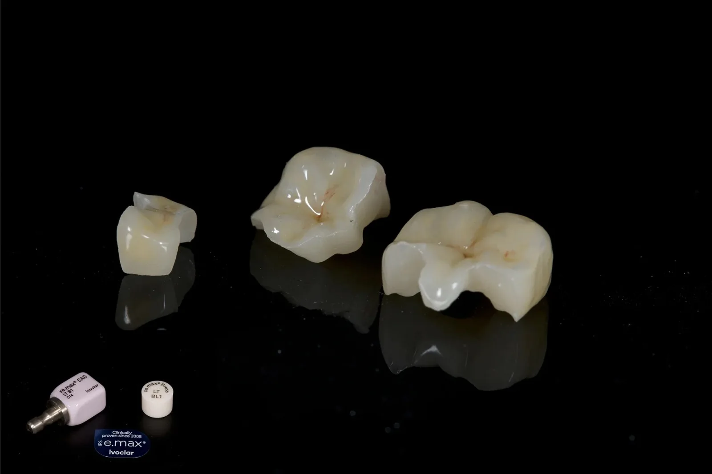
Grin Dental Lab
Ребрендинг, новый сайт, коммерческое предложение и журнал услуг для работы с докторами
Доктор заходит и сразу видит мастера и его работы
Главный актив у вас уже есть. Василий одновременно CDT в США и врач-стоматолог с 17 годами опыта. Нужно, чтобы это читалось с первого экрана, а работы выглядели как хорошее портфолио.
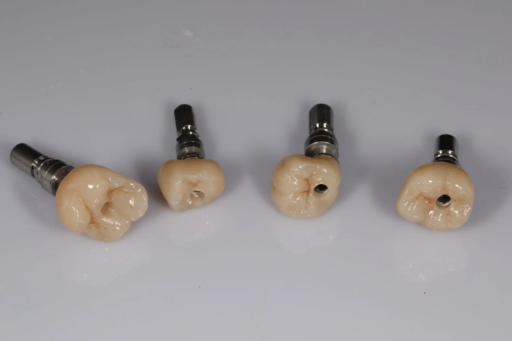
Работы сильные, а сайт их не продаёт

Шаблонный вид. Тёмно-синий с бирюзой и тяжёлый шрифт читаются как обычная клиника, а не как бутиковая лаборатория.
Пустые экраны. Блоки не догружаются, и доктор листает белые экраны. Это первое, что съедает доверие.

Кейсы без истории. Заглушка «Case 1», нет материала, количества единиц, срока и «до / после».
Главный козырь спрятан в стене текста
То, что Василий и техник, и врач, понимает работу «с обеих сторон кресла» и учился у профессора Славичека, сейчас лежит одним длинным абзацем в середине страницы. Доктор до него не доскроллит.
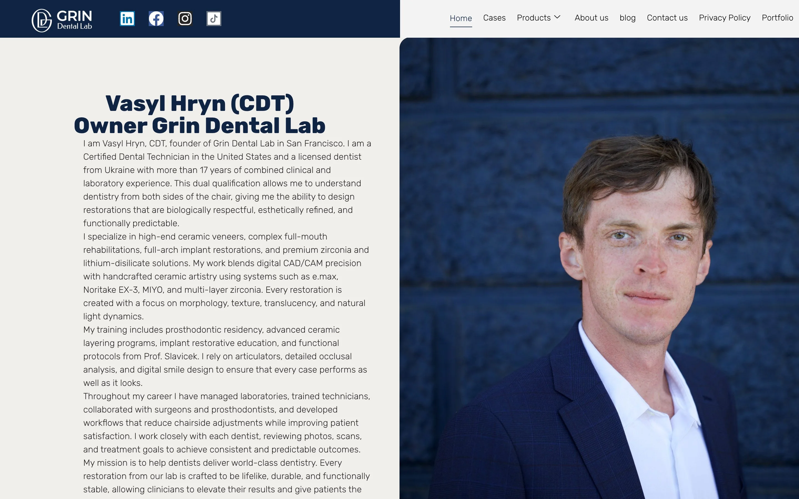
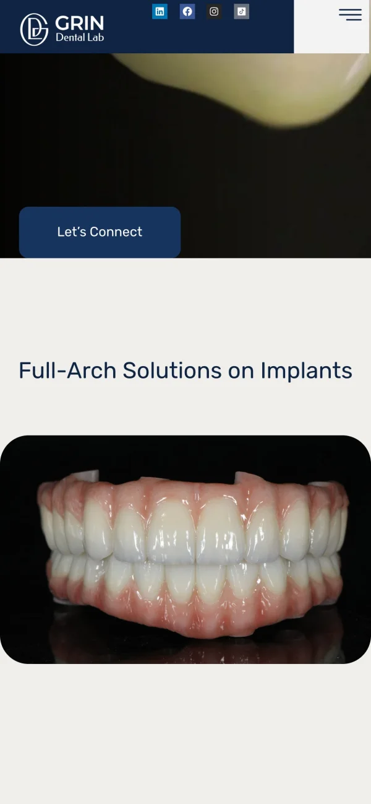

Тихая роскошь вместо клиники
Светлый фарфоровый фон, графитовый текст, элегантная антиква для заголовков и спокойный гротеск для текста. Работы показываем как ювелирные изделия: на тёмном фоне, крупно, но в аккуратных карточках с подписью.
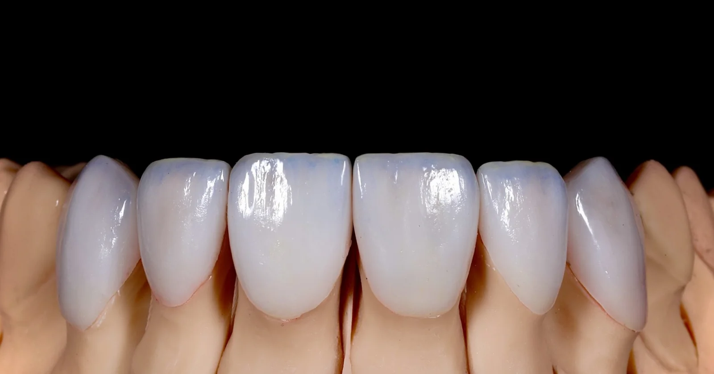
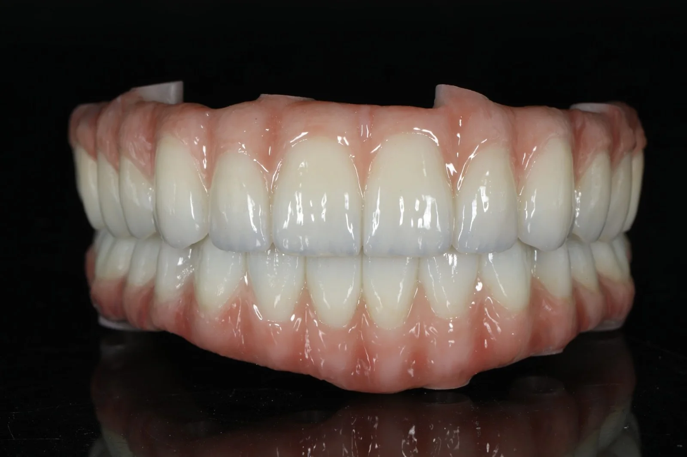
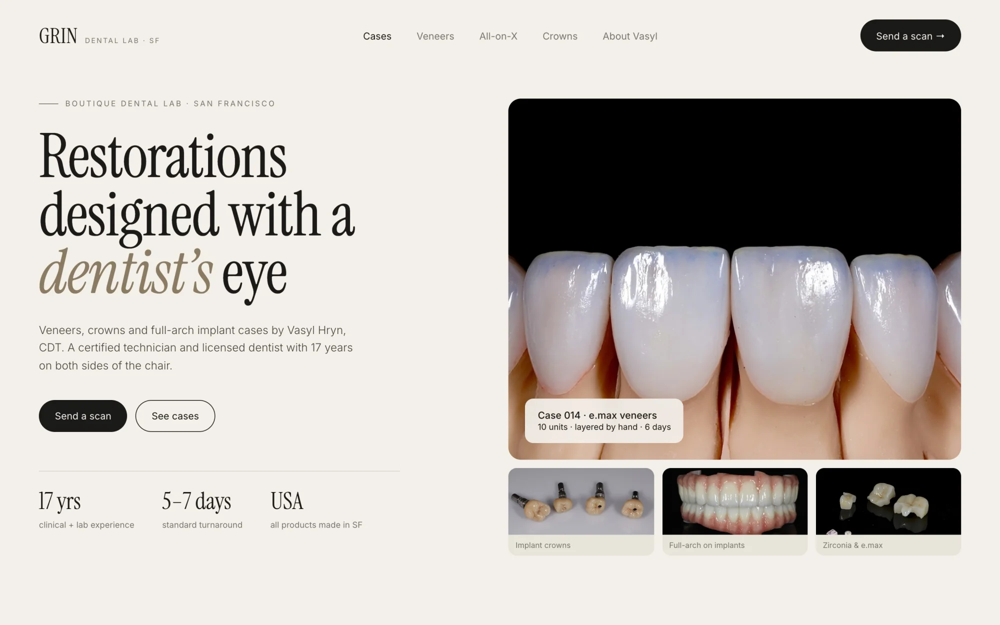
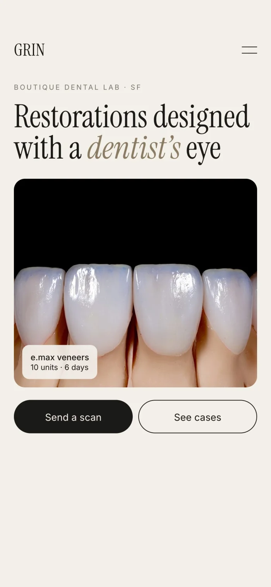
Мастер и его квалификация в заголовке, главное действие «Send a scan» всегда под рукой, кейсы с подписями вместо фото на весь экран. Это направление для обсуждения, финальный стиль соберём после брифа.
Каждая страница отвечает на вопрос доктора
Сайт на английском, под американских докторов. Помогу с текстами на основе ваших материалов.
Один стиль на сайте, в журнале и в коробке с работой
Доктор держит в руках коробку с коронкой, RX-форму и визитку. Всё это должно выглядеть так же дорого, как ваша керамика.
Журнал, с которым отдел продаж приходит в клинику
Журналы о людях я делаю в своём проекте ALBUMCHIK, так что это моя любимая часть.
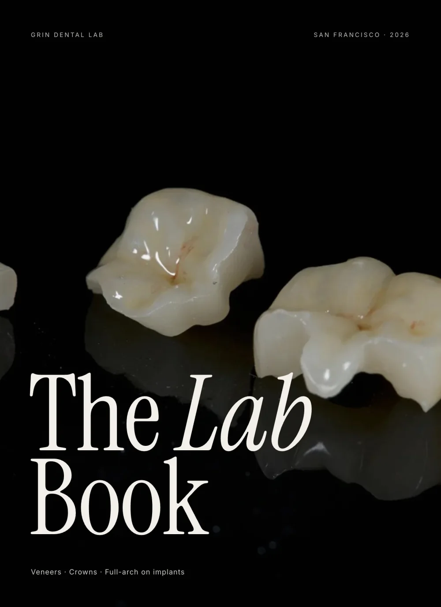
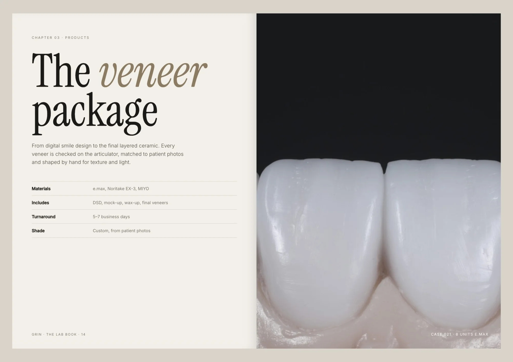
8–12 слайдов, которые доктор дочитает
Короткая версия журнала для отправки после звонка. Шаблон, в котором отдел продаж сам меняет название клиники и нужные услуги.
Продуктовый дизайнер, который работает вместе с ИИ
Я веду проект целиком: стиль, сайт, печать и презентации в одной системе. ИИ меня не заменяет, он дополняет: Claude Code, Codex и Higgsfield берут рутину, поэтому работа идёт быстрее, а решения и вкус остаются за мной.
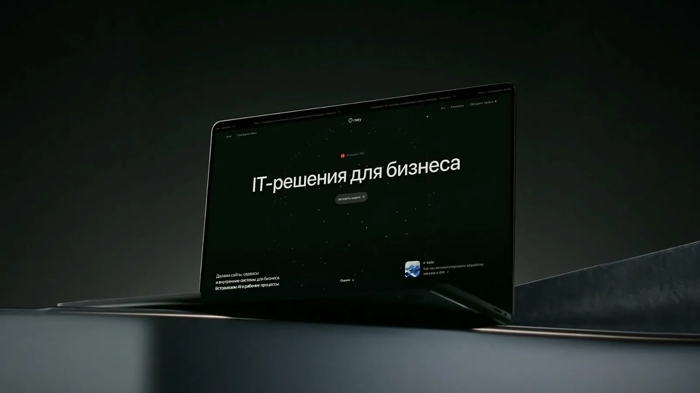
Mary AI: сайт, платформа, питч-дек, брошюры

InTreatment: многостраничный сайт и онбординг
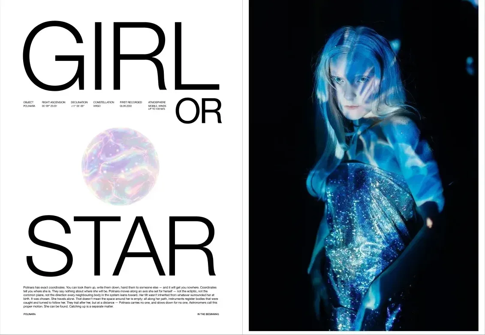
ALBUMCHIK: вёрстка журналов
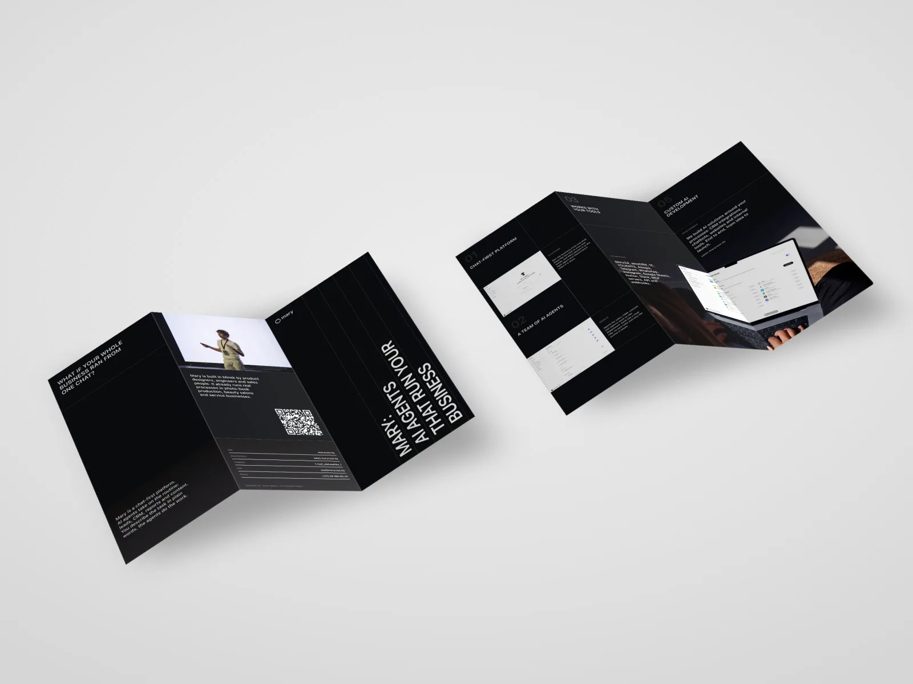
Брошюра для конференций
Около 5 недель на весь пакет
Оплата по этапам: 50% на старте, 50% по готовности. Опционально: вёрстка сайта от $1 500, 1–2 недели.
Давайте созвонимся на 30 минут
Обсудим примеры, которые вам нравятся, и соберём бриф. После этого за пару дней покажу мудборд и направление стиля.
Что пригодится: исходники фото работ, примеры сайтов, которые нравятся, доступ к текущему сайту.